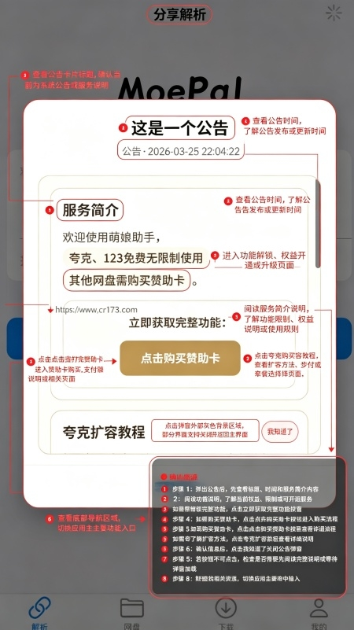

把 MoePal 翻了个底朝天——那些官方没说却超级好用的冷门技巧
用 MoePal 下了几百个网盘资源后，我发现了五个几乎没人提到的隐藏功能：并发数调优、手动解析的高级选项、立即下载插队、收藏与队列配合、卡等待中的快速排查。这些技巧让下载效率翻了倍。
你以为MoePal官网上介绍的只是个"粘贴链接 → 自动解析 → 一键下载"的网盘工具？说实话我一开始也是这么想的。直到某天下了一堆大文件，发现队列里有个任务死活卡在"等待中"，我才开始往设置深处翻——结果翻出了一整套官方没怎么宣传的隐藏玩法。
藏在设置里的并发数调优：不是越大越快
所有人第一次见到 Gopeed 的"并发线程数"设置，第一反应都是往最大了拉对吧？我也试过——32 线程同时跑，结果网速反而掉到了几十 KB。
后来才搞明白：Gopeed 默认的"自动"模式才是给 99% 的人准备的。它会根据实时带宽动态调整线程数，带宽充足时多开、紧张时收拢。真正需要手动调的是两种情况：
- 带宽特别窄（比如校园网、移动数据）：固定 4~8 线程反而比自动模式快，因为自动会尝试开更多然后被服务器限速打回来，来回浪费时间
- 大带宽家庭宽带（300M+）：可以固定 16~32，把硬件跑满
还有个容易忽略的点——后来去MoePal文档翻了一下才确认：活动任务数 × 每个任务的线程数 = 总连接数。默认活动任务数是 3，如果你把线程数设到 32，总连接就是 96 条——别让路由器先扛不住。
手动解析里的三个高级选项，自动模式根本看不到
平时复制链接，MoePal 自动剪贴板监听弹窗，点一下就开始解析——这条路太顺了，以至于我完全没注意到手动粘贴解析页藏着东西。
打开解析页，别等自动弹窗，手动把链接粘进输入框，仔细看输入框下方——有个"解析设置"可以展开。里面三个选项，关键时刻能救命：
强制重试：自动解析失败时勾上这个，MoePal 会换一个解析接口重新请求。有些平台接口偶尔波动，换一条路就通了。
指定平台：MoePal 偶尔会认混平台——比如一个 UC 网盘链接被识别成百度，结果解析出来文件大小全是 0。手动指定一下，问题立刻消失。
超时时间：默认 15 秒，大文件或网络不稳的时候根本不够。改成 30 秒甚至 60 秒，能减少很多"解析超时"的误报。
这些高级选项得先装上 MoePal 才能玩，直接从官方下载拿最新版就行。
立即下载按钮不是摆设：它真的会插队
下载队列里堆了十几个任务，前面三个在跑，你刚加了一个急着要的——怎么办？
点那个新任务右边的"立即下载"。Gopeed 会暂停一个当前正在跑的活动任务，让你点的这个先下完。被暂停的那个自动回到等待队列，等你点的完成后再继续。
这个行为官方文档里只提了一句"手动开始等待中的任务"，但没说它的实现机制——我观察了好几次，它是真暂停不是插队重排。对于临时想救个急的场景比删队列重排方便太多。
收藏夹的真正用途：不是书签，是离线下载池
MoePal 的收藏功能，大部分人理解成"把好看的资源存起来以后看"——但其实它存的是解析结果到本地 SQLite 数据库。
这意味着什么？
- 收藏的文件不会出现在下载队列里，界面干干净净
- 想下的时候从收藏夹一键开始，跳过重新解析的步骤
- 队列里堆了一堆不急的任务时，把新资源收藏而不是加入队列，界面不会炸
我现在的习惯是：先用收藏夹攒一批待下的，等手头的下载任务差不多了，从收藏夹里批量挑几个一起加入队列。既不浪费解析次数，又能保持队列清爽。
长时间卡在"等待中"？先查活动名额不是网络
这是我踩过最久的坑：有个文件在等待队列里挂了半个小时，我以为是网络问题，反复暂停恢复切换 Wi-Fi 和移动数据——白费功夫。
最后发现是：活动任务数满了（默认 3），但前面三个任务都没跑完，新任务当然等着。
正确的排查顺序是：先看活动名额满没满 → 再看有没有暂停的活动任务 → 最后才查网络。快速解法就是点那个"立即下载"让它插队，或者暂停一个暂时不重要的活动任务腾出名额。

一个容易踩的坑：线程数和活动任务数别同时拉满
之前说了总连接数 = 活动任务数 × 线程数。如果你把两个都拉到最大值（比如活动 10 + 线程 32 = 320 条连接），轻则路由器卡死，重则被运营商封连接数。
我的建议：活动任务数留在默认的 3，根据带宽调线程数就够了。真的要多任务并行下载，用 Gopeed 自带的队列调度策略比手动拉满靠谱得多。
最后说句实在话
MoePal 把 Gopeed 引擎集成进来做得很克制——多线程、断点续传、多协议这些核心能力默认就全开了，用户完全可以无脑用。但那些藏在设置深处、或者只在手动模式下才出现的选项，是给愿意花十分钟翻一翻的人准备的。
把它用透，其实就是多看两眼那些灰着的按钮。
（资料说明：MoePal 的完整文档与解析说明在三个仓库都能拿到——GitHub、Gitee、GitCode 同步维护同一套资料，方便不同网络环境下查阅。）